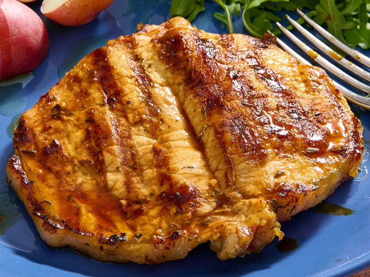

Best Pork Chop Marinade

Prep Time: 10 mins
Cook Time: 20 mins
Additional Time: 6 hrs
Total Time: 6 hrs 30 mins
Servings: 2
Description
This pork chop marinade is savory, slightly sweet, with a little spice,
and the best I've ever made—I'm so glad I wrote the recipe down!
The pork chops taste great grilled and always turn out tender and juicy.
Ingredients
- 2 large pork chops
- 1/4 cup extra-virgin olive oil
- 4 cloves garlic, chopped
- 3 tablespoons dark brown sugar
- 2 tablespoons lemon juice
- 2 tablespoons spicy brown mustard
- 2 teaspoons dried thyme or to taste
- 1 teaspoon onion powder
- 1 teaspoon Worcestershire sauce
- 1 teaspoon white wine vinegar
- 1 teaspoon mesquite-flavored seasoning
- 1/2 teaspoon dried parsley flakes
- 1/2 teaspoon kosher salt, or to taste
- 1/2 teaspoon freshly ground black pepper
Steps
- Gather all ingredients.
-
Place pork chops on a flat work surface. Slice horizontally through
the middle, being careful not to cut all the way through to the
other side. Open the two sides and spread them out like an open book.
-
Whisk olive oil, garlic, brown sugar, lemon juice, mustard, thyme,
onion powder, Worcestershire sauce, vinegar, mesquite seasoning,
parsley, salt, and pepper together in a bowl; pour into a large
resealable plastic bag.
-
Add pork chops, coat with marinade, squeeze out excess air, and
seal the bag. Marinate in the refrigerator 6 to 8 hours.
-
Preheat an outdoor grill for medium-high heat and lightly oil the
grate. Remove pork chops from the marinade and shake off any excess.
Discard the remaining marinade, or transfer it to a saucepan and
bring it to a boil. Boil for several minutes before using as a sauce.
-
Cook chops on the preheated grill until nicely browned on each side
and slightly pink in the center, about 8 minutes per side. An
instant-read thermometer inserted into the center of each chop
should read 145 degrees F (63 degrees C). Let rest for 5 minutes
before serving.
Nutrition Facts
- Calories: 756
- Fat: 42g
- Carbohydrates: 30g
- Protein: 62g
Back to Odin Recipes